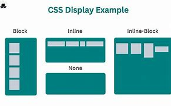
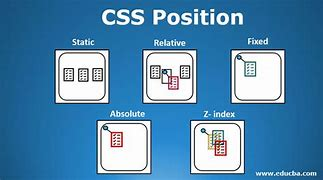
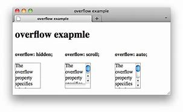
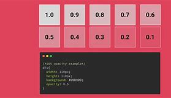
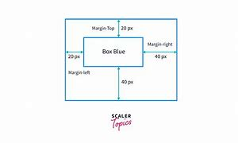
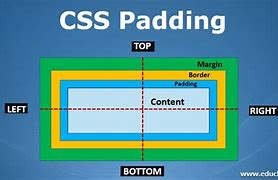
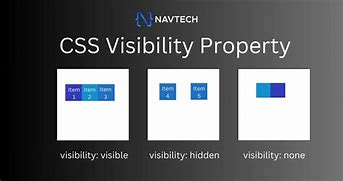
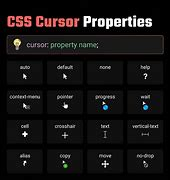

| font-size |
Define el tamaño del texto. |
px, em, rem, %, vh |
p { font-size: 16px; } |
 |
MDN |
| border-radius |
Redondea los bordes de un elemento. |
px, %, rem |
div { border-radius: 10px; } |
 |
MDN |
| display |
Define cómo se muestra un elemento. |
block, inline, flex, grid |
div { display: flex; } |
 |
MDN |
| flexbox (display: flex;) |
Permite organizar elementos en un contenedor flexible. |
flex, inline-flex |
div { display: flex; justify-content: center; } |
|
MDN |
| position |
Especifica la posición de un elemento en la página. |
static, relative, absolute, fixed, sticky |
div { position: absolute; top: 50px; } |
 |
MDN |
| box-shadow |
Aplica una sombra a un elemento. |
Desplazamiento, color, blur |
div { box-shadow: 2px 2px 10px rgba(0,0,0,0.3); } |
 |
MDN |
| overflow |
Controla el desbordamiento del contenido. |
visible, hidden, scroll, auto |
div { overflow: auto; } |
 |
MDN |
| z-index |
Controla la superposición de elementos. |
Valores numéricos |
div { z-index: 10; } |
 |
MDN |
| opacity |
Define la opacidad de un elemento. |
Valores entre 0 y 1 |
div { opacity: 0.5; } |
 |
MDN |
| margin |
Define el espacio externo de un elemento. |
px, %, auto |
div { margin: 20px; } |
 |
MDN |
| padding |
Define el espacio interno de un elemento. |
px, %, auto |
div { padding: 15px; } |
 |
MDN |
| visibility |
Controla si un elemento es visible o no. |
visible, hidden, collapse |
div { visibility: hidden; } |
 |
MDN |
| cursor |
Cambia la apariencia del cursor del mouse. |
pointer, default, move, text, wait |
button { cursor: pointer; } |
 |
MDN |
| text-align |
Define la alineación horizontal del texto dentro de un elemento. |
left, right, center, justify |
p { text-align: center; } |
 |
MDN |